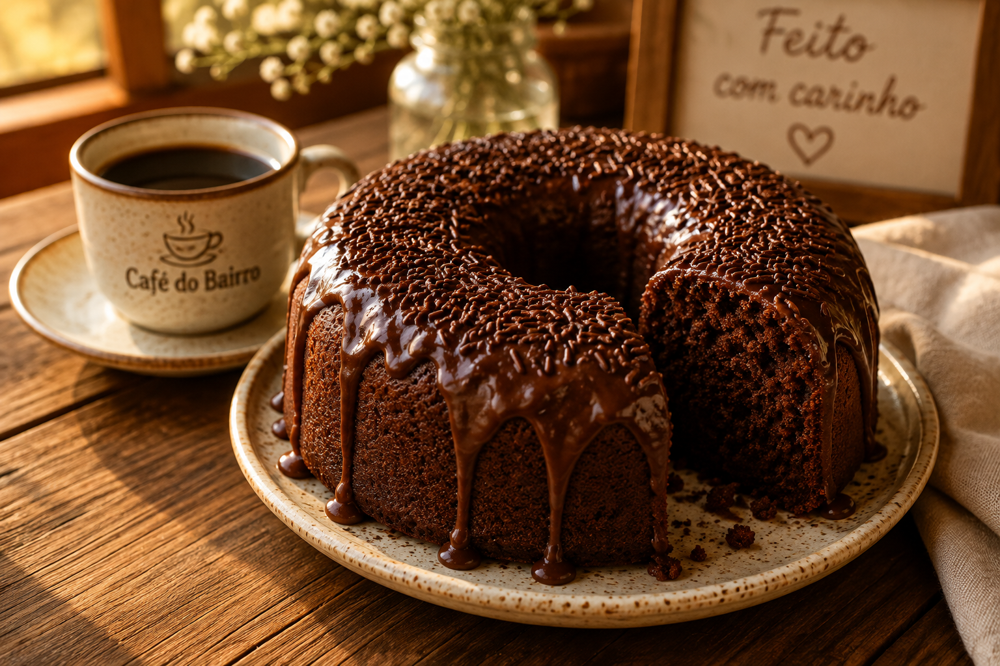
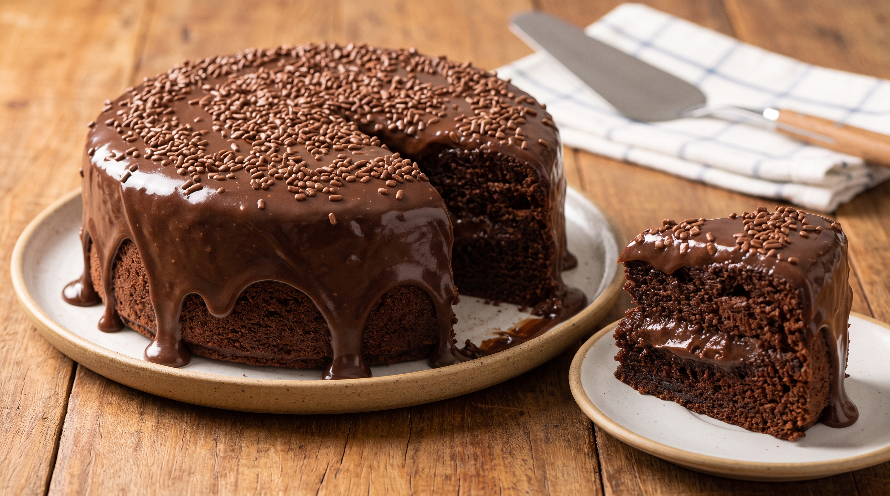
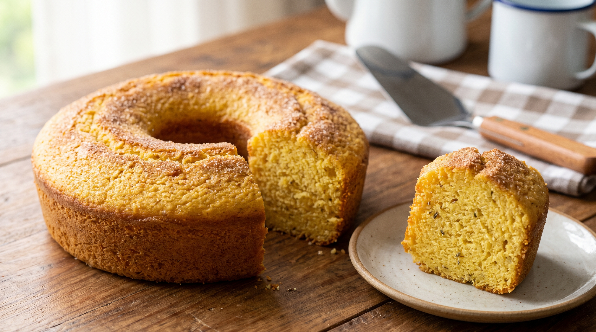
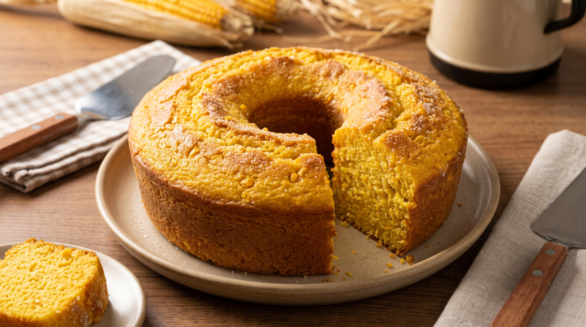
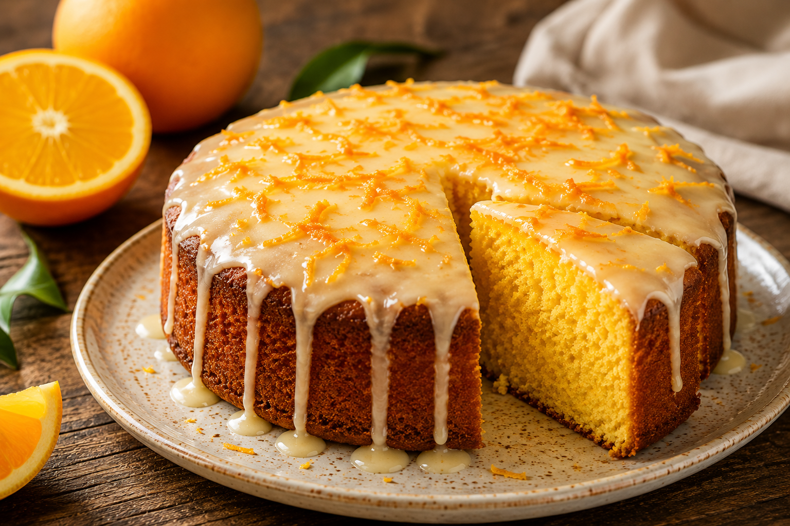
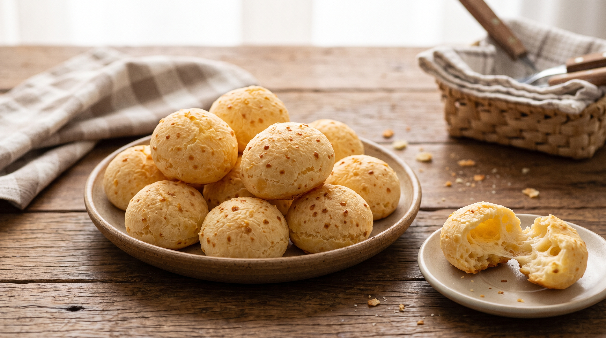
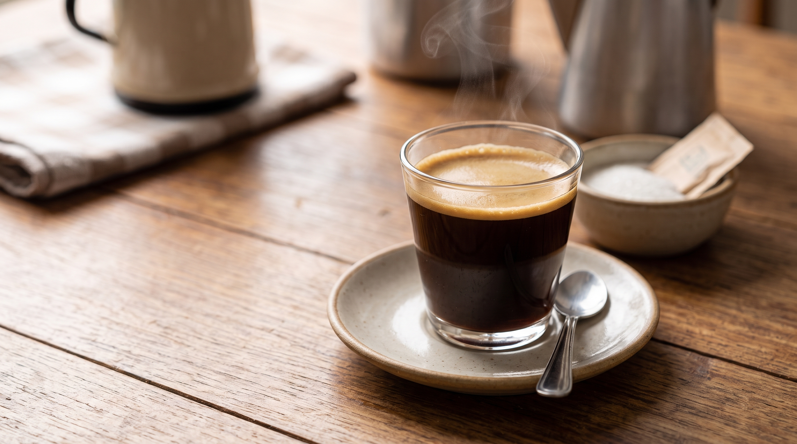

Um pedaço de carinho em cada fatia.
Café passado na hora, pão de queijo quentinho e bolos caseiros preparados com carinho

Nosso Cardápio

Bolo de Chocolate
Carro chefe da casa com cobertura de chocolate

Bolo de Fubá
Receita Tradicional de dar água na boca

Bolo de Milho
Bolo feito de milho verde. Fofinho e saboroso

Bolo de Laranja
O favorito das vizinhas para o café da tarde

Pão de Queijo
Dispensa comentários

Café
Nada melhor do que café para dar energia
Sobre
Há seis anos, o Café do Bairro faz parte da rotina da vizinhança. Com café passado na hora, pão de queijo quentinho e bolos caseiros preparados com carinho, buscamos oferecer aquele sabor de casa de vó em cada visita.
Funcionamento
"escreva seus dias e horários de funcionamento aqui"
Localização
"escreva aqui seu endereço"